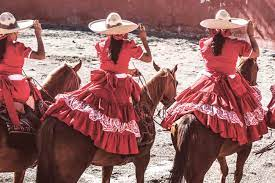
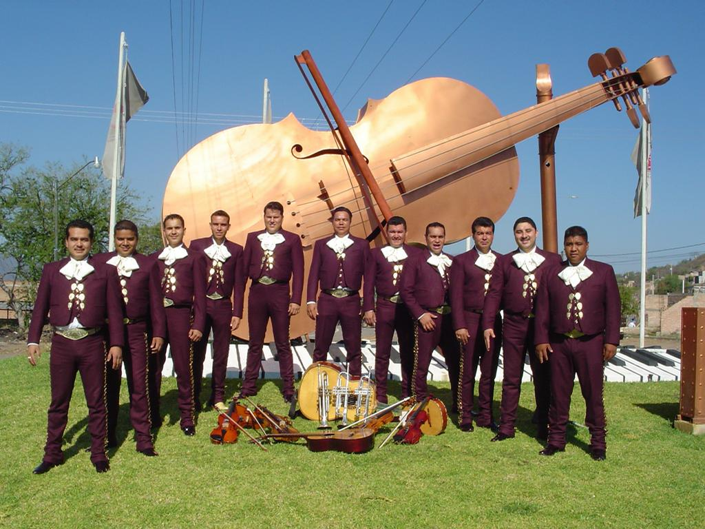

MUNICIPIO DE TALA, JALISCO
Nuestra cultura:
La cultura de Jalisco se ha vendido internacionalmente como “la cultura tradicional de México”.
Muchos de los elementos que son símbolo de este país son parte de la cultura de Jalisco,
tales como el charro, los mariachis y el tequila. ...
Jalisco también resalta en materia de objetos artesanales.

Sones, jarabes, polkas, serenatas, corridos, vals, boleros y canciones tradicionales de Jalisco,
se escuchan y se hacen sentir en el alma de todas y todos los jaliscienses que disfrutan de esta manifestación cultural
y artística representativa de nuestro estado, es por eso que se reconoció a
"El Mariachi en su diversidad regional y contextos sociales".

ES SITIO WEB SE ELABORO CON FINES EDUCATIVOS, COMO PARTE DE LA ACTIVIDAD DE LA MATERIA DE CONSTRUYE PAGINAS WEB
Profesor: Juan Carlos Mariscal Chavarin
Estudio en:CETIs No. 161
Nombre: Jocelyn Lizeth Cruz Hernandez.
Correo: joce09475@gmail.com